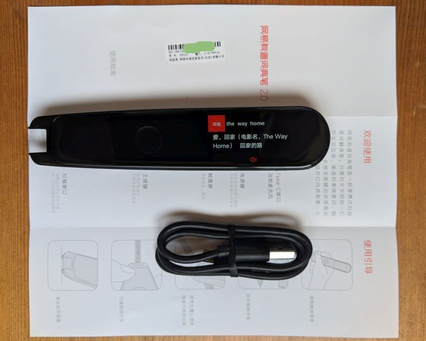
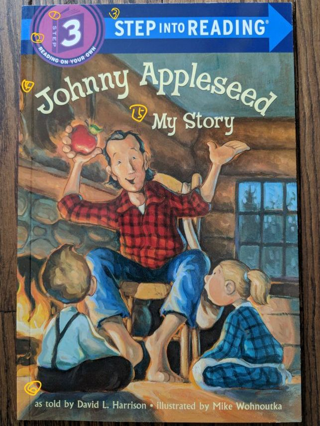
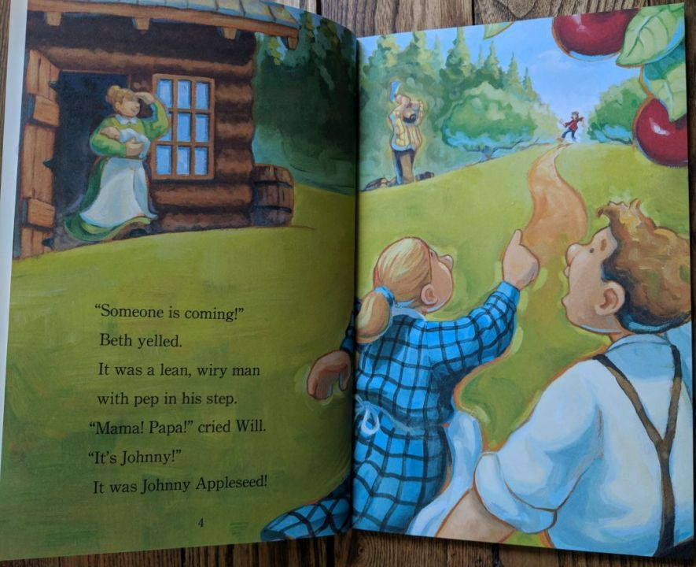

有道词典笔2.0之童书实测
2019-09-08 周日 by 黄复雄.本文会不断更新。
三四天前，一位邻居妈妈来家里，带了一支点读笔，让我帮更新。这种点读笔是配合几套英语阅读入门书使用的。笔是三四百块钱一支，书是特殊印刷的，比普通书要贵不少，而且品种有限，有些书的品质看起来还相当可疑。
我以前编小学语文教材，十多年前就有商家跟我们合作，做点读版的，所以对点读笔不算陌生。从家长、孩子的角度看，点读笔的主要问题就是太贵，一支笔配几套书甚至只配一套书，就要三四百甚至七八百块钱。从我个人的偏见讲，这种不能通用、功能单一、设计往往非常粗糙甚至丑陋、看似附件的东西，却比主件——图书贵那么多，实在不能接受。
想起来，最近看到关注了很久的有道词典笔出了2.0版，于是看了看些网上的评论，就给孩子买了一件。孩子最近爱认字，可能用得着。
基本信息
简单的盒子
里面三件东西
我买的是黑色款，看起来屏幕与外壳连成一片了。
说明书有些正文太浅了，想搞格调，让有点老花的想爸眼睛吃不消。

主机背面如下：

英文童书实测
关于以下实测：
- 每处至少扫描三次，有错时多试几次。
- 尽可能以句子为单位扫描。15日升级到1.1.0版系统（大约是9日发布的）后，可以多行扫描了。新版还增加了5种常见英美考试的专用词典/词表。
英文童书，我选的是兰登书屋的step into reading套书step 3组中的一本，Johnny Appleseed。
封面
封面往往字体多，底色、底图复杂，对OCR识别能力有较高的考验。为说明方便，要识别的部分都已标号。

各部分识别情况是：
- 全部正确；
- 全部正确，文字排列成圆弧形和背景图案不影响识别，翻译为“独自阅读”；
- 四次正确一次，前三次分别识别“CTEDINTO READIN5”"STEPINTO READING""STFPINTO READING"，第四次正确，翻译为“进入阅读”。实际观察到，正在识别时的结果往往是正确的，包括字母和空格，错误是后期自动调整造成的。可能是因为一句中间的INTO字号小，这种情况比较少见，导致人工智能识别的错误。
- 标题高度超过扫描口的宽度，无法识别。
- 副标题高度有点点超高，如果扫描时小心调整笔的走向，可以正确识别；否则两个y可能识别为u或g。
- 全部识别正确，但翻译完全混乱，显然是无法把中圆点“·”处理成句子分隔符号，勉强解释成一句话，所以造成错误。如果分成前后两句扫描，第一句误译为“……说过”“正如……所说”，第二句有一半几率译为“由……绘制”，一半误译为“由……解释”。可见在语境不全的情况下，不能处理词语的特殊用法。
正文
这一页文字下有简单的底色、背景图。

所有行连续扫描三遍：
- 文字识别方面，只有一次“coming”误作“comino”，其余全部正确。
-
翻译方面，因始终无法把“Will”处理成人名（但单扫“Will”能正确处理），人工智能引擎勉强调整前后的字词，用力过猛，导致莫名其妙的脱漏问题：
有一个“有人来了！”贝思（喊/叫）道。那是一个精廋结实的男人，迈着（轻快/矫健）的步伐，（“妈妈！爸爸！”“哭”约翰尼！/“妈妈！爸爸！”“哭了。”/“哭。”约翰尼！）是约翰尼·苹果籽！
单扫一个单词时，识别往往是正确的，但对于孩子来说，显然在义项选择上困难，比如：
- 单扫lean，释义为：v. 倾斜；倚靠；向一侧歪斜 n. （肉）瘦的，无脂肪的
- 单扫wiry，释义为：adj. 金属线制的；金属丝般的；坚硬的；瘦长结实的；（噪音）尖细的
而整句识别时就没有这个问题，比如“It was a lean, wiry man”这一句，能正确翻译为“那是一个精廋结实的男人”，且相当典雅。根据语境使用词语的恰当义项，是整句翻译的重要意义。
目前译文不能朗读，对一二年级以前还不怎么识字的孩子来说不方便。
汉字童书实测
《兔先生的巧克力工厂》是一本很有趣的公民教育绘本，讲斗争与妥协的宪政常识，英国的埃利斯·多兰著，由我译成汉语。
封面

- 全部正确。
- 有一次多出一个数字：“巧5克力蛋……”。
- 全部正确识别，但“著”始终误读为“zhe”，大概因语境不完整，随便选了个音凑数。
- 字体略超高，“更多”二字无法识别，“假期”二字全部正确。
- “美术”二字，分别识别为“实研、美闭、美师”，其余全部正确。
斗争页

- 略有底色干扰，全部正确。
- 手写体，反白，正确率约25%。
- 手写体，有底色干扰，正确率约30%。
- 全部识别正确，“干”全部误读为gan1。
- 全部识别正确。
- 正确率约36%。字体同第4处，可见常见正文字号要比大字更容易识别。
妥协页
所有各处全部正确。本页都是小字，虽有三种字体，都没有干扰。
第7处的儿化音——“小人儿”读音也正确。

其他功能测试
语音助手
语音助手实际上是语音搜索，不过设定了一些关键词与特定使用场景关联在一起。
- 念汉语单字。会自动选定一个字，而不是把同音字都列出来供选择。所以给出的字往往不是你要的。也不能先输入词语、句子，然后挑选其中一个字。
- 念部件拼汉字。常见字没问题，比如“三个人”“一个宝盖头，一字子”“一个石一个开”，但很多不行，所以并不实用。
- 念多汉语音节词语、百科词语、诗句。比较准确。只是临时组成的词语不能处理。
- 念汉语词语“…同义词/近义词/反义词”，准确。
- 念句子中译英，如“我想吃点饭，英语怎么说”“欢迎来到土豆城，英语怎么说”。
- 念英语单词、字母拼写单词，对你的发音准确性要要求，感觉准确率还可以。
- 念英语词形变化，如“do变化”“make变化”，准确。
- 念句子英译中，直接说就可以。
- 念常见数学运算，如“5加8等于”“2的平方根等于”，准确。
上面的提问格式是优化过的。界面上提供的提问格式比较复杂，容易出错；也不全。
历史记录/收藏夹
- 历史记录和收藏夹里的条目不能再整句朗读，大概是个bug。
- 这些数据也不能导出，屏幕又比较小，所以不大好利用。
建议
- 英语句子的中文译文要能够朗读，方便小学一二年级以前还不怎么识字的孩子。
- 汉语单字输入，应增加：
- 念一个音节后，列出同音字候选；
- 输入词语、句子后可以选其中一个字查询（以词句定字）；
- 念笔画（横竖撇点折5种）输入，或软键盘输入；
- 针对中小学语文学习进行优化：
- 字体：小学低段识字、写字都要用楷体；
- 专门优化古诗文和字词学习的辅助内容：初中以前的教材只有一套，内容稳定，完全可以基于教材做出深度的辅助内容，比如请名家把所有古诗朗读一遍；
- 收藏夹应增加复习功能，比如可以按熟悉程度评分、自动安排复习日程、自动连续播放等；增加用户数据导出功能；
- 语音助手中针对特定使用场景的提问格式，应当做成明确、稳定、简洁的“快捷表达式”，而不是完整的句子，让人费心思去猜。
目前看来，有道词典笔主要针对英语学习，而且主要针对有一定自学能力的学习者。 不过，如果能有针对性地稍加改进，对于语文学习也会很实用；并且还可以适用于年纪更小的学习者。
结论
有道词典笔2.0的主要作用有二：
其一，整句识别、朗读、翻译。
学习语言，不管是母语还是第二语言，通过语音上的直接模仿，都是最高效的。按理说，跟老师、家长读也不错，但是很多成人包括老师的语音都不可靠，再说父母总不能时刻在身边，跟别说带几十个孩子的老师了。
还一种方式是用磁带机、电脑、手机等播放录音，孩子跟读，可是这时没有文本和图画对照，也就是语言学习环境不完整，不仅效果要折扣，对于学习阅读就相当不方便；还有，不能随时按自己的需要挑着读。
有道词典笔能满足这个需要。
其二，就是基本的查字典功能。
查字典最重要的一点是要快，尽量少打断、干扰阅读。这是词典笔相对于纸质词典、电子词典的很大优势。
至于在同类产品中间，PC版有道词典的内容质量是有道词典笔的信用保证。
综合而言，有以下结论：
- 五岁孩子可以正常操作；3岁孩子，如果手劲好一点也基本能操作。
- 扫描口宽度是1cm。超高的行无法扫描。一次扫过多行时，只取中间的一行；扫描口上有中线标志，供扫描时对准。
- 能适应多种字体，对常见正文字号大小的字识别能力强，太大的字容易出错。
- 主要适用于英语学习，目前对应的汉语译文不能朗读，因此学习者大概需要有相当于小学三年以上的汉字识字量；如果不大认识汉字，则需要能大致听懂要学习的英文。
- 常用英语单词是真人语音，英语整句TTS朗读尽管算不上优秀，但大概比很多英语老师要准确；也就是说，用于语音上的模仿学习是没有问题的。
- 英语整句翻译成中文，比一般老师好也是无疑的。
- 还不认识汉字的孩子可以用来辅助读绘本、辅助识字、读练习册上的题目，但学习材料应该是句子、词语，而不是单字。
- 还有很大的改进空间（通过软件升级即可实现），如果有道动力够足，那么用户还会有惊喜。
Phaser3 API文档大纲-InputPlugin
这是根据Phaser3 API文档中各类之页面右侧的目录整理的，对印象深刻的地方做了说明，或增加代码示例。可做便览之用。
read...Pyo文档（二）实例
Pyo是用C写成的Python模块，用于生成数字信号处理（DSP）脚本。它提供一整套的类，用于构建音频软件，编写算法音乐，或通过一种简单、成熟、强大的编程语言随意探索音频处理。
read...Pyo文档（一）
Pyo是用C写成的Python模块，用于生成数字信号处理（DSP）脚本。它提供一整套的类，用于构建音频软件，编写算法音乐，或通过一种简单、成熟、强大的编程语言随意探索音频处理。
read...Pyo学习笔记
Pyo是用C写成的Python模块，用于生成数字信号处理（DSP）脚本。它提供一整套的类，用于构建音频软件，编写算法音乐，或通过一种简单、成熟、强大的编程语言随意探索音频处理。
read...小工具：分割文本文件
如果你想以特定格式的行（用正则表达式表示）为界，把一批文本文件分割成小片段，比如每章节或每卷一个文件，可以使用下面的Python脚本。
read...Audition技巧：半自动分切音频
在做电子书时，我需要把几百个生字朗读音频逐字分切开，把课文朗读音频逐句分切成开；或者获取每个分切位置的时间标签。总之是根据停顿静音进行分切的。此类要求可以通过Audition的“诊断”功能实现。
read...